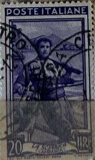
| SOURCE | TITLE| IMAGE MATCH | click to source page |
| www.alamy.com | Italy Postage Stamp - Campania - the Trawling Stock Photo ... | 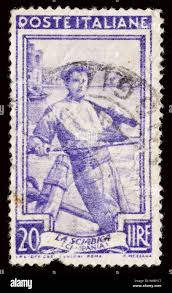 |
| www.dreamstime.com | Postage Stamp Printed in Italy Shows Campania - the ... | 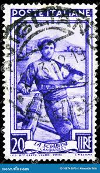 |
| www.mysticstamp.com | 100 - 1900 Switzerland - Mystic Stamp Company | 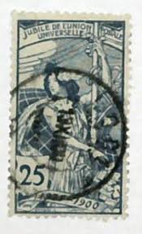 |
| www.ebay.com | North VIETNAM 1945 Viet Minh Overprinted Block of 4 Doudart ... | 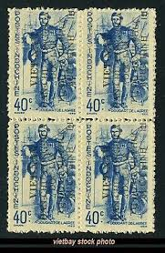 |
| www.ebay.com | Argentina Stamp Scott #552, Used | eBay | 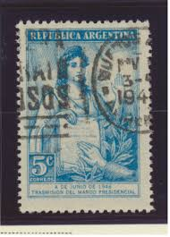 |
| www.ebid.net | China 1932 Martyrs Ch'en Ying-shih 1c Used Stamp on eBid ... | 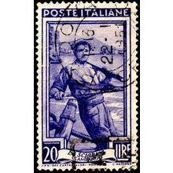 |
| www.hipstamp.com | Italy 1950 - U - Scott #549 | Europe - Italy, General Issue ... | 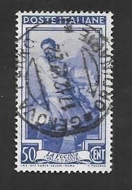 |
| www.shutterstock.com | Italy- Circa 1950 Postage Stamp Printed Stock Photo ... | 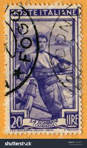 |
| www.reddit.com | I found this old postcard from my grandparents house and id ... | 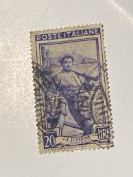 |
| www.etsy.com | France French Postes Postage Foreign Blue Republique ... | 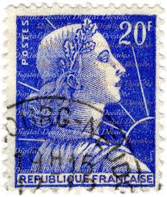 |
| www.ebay.com | Italy Stamp - 1950 20L Italy Working Cancelled (FBX) | eBay | 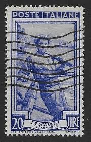 |
| commons.wikimedia.org | File:Rita Lobato 1967 Brazil stamp.jpg - Wikimedia Commons | 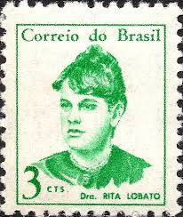 |
| en.wikipedia.org | Postage stamps and postal history of Tete - Wikipedia | 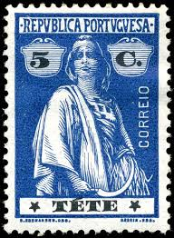 |
| www.mysticstamp.com | S3 - 1956 50c Savings, Ultramarine - Mystic Stamp Company |  |
| www.buyhungarianstamps.com | C7-C9 Czechoslovakia - Stamps of 1920 Surcharged in Black or ... | 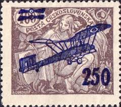 |
| www.amazon.com | Amazon.com: American Coin Treasures 40 U.S. Postage Stamps ... | 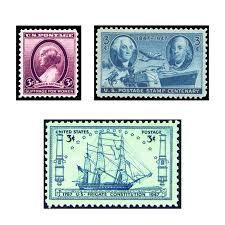 |
| latinafy.com | Italian Stamp Poste Italiane La Sciabica Campania 20 Llre | 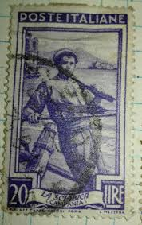 |
| www.hipstamp.com | Italy Mi.#815 | Europe - Italy, General Issue Stamp / HipStamp | 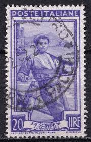 |
| postalmuseum.si.edu | 25c Jubile de L'Union Postale Universelle single | National ... |  |
| www.shutterstock.com | Estampilla Argentina: Over 3,548 Royalty-Free Licensable ... | 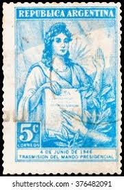 |
| www.dreamstime.com | Gonçalves Dias editorial stock image. Image of philatelic ... | 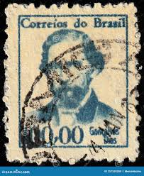 |
| www.buyhungarianstamps.com | C7-C9 Czechoslovakia - Stamps of 1920 Surcharged in Black or ... | 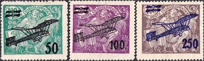 |
| www.instagram.com | Maria Quitéria (Jul 27, 1792 - Aug 21, 1853) was a Brazilian ... | 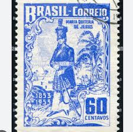 |
| en.wikipedia.org | Postage stamps and postal history of Diego-Suárez - Wikipedia | 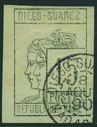 |
| www.stampcommunity.org | Should I Get This Swiss Stamp Expertized? - Stamp Community ... | 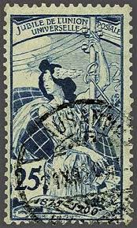 |
| www.ebay.com | ITALY, Sc #557, USED, 1950, Fisherman, Sock on Nose Cancel ... | 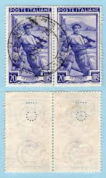 |
| www.alamy.com | Brazilian stamp for brazil postcard hi-res stock photography ... | 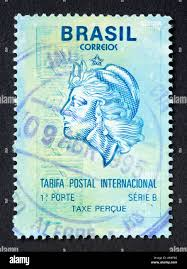 |
| www.stampcollectingblog.com | Brazilian definitive postage stamps of 1920-1941 “Série vovó” | 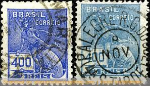 |
| heharris.com | U.S. Plate Block Stamps: 1960-1969 | H.E. Harris | 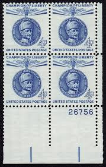 |
| www.istockphoto.com | 40+ Old Fashioned Postage Stamp Austria Women Stock Photos ... | 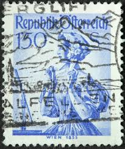 |
| worldstampsproject.org | Switzerland: types and varieties of postage stamps, 25th ... | 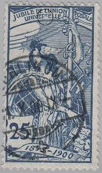 |
| postalmuseum.si.edu | Stamp Collecting | National Postal Museum | 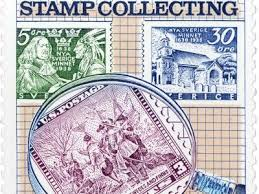 |
| www.old-stamps.com | Commerce-Mercury / Brazil correio 1936 | 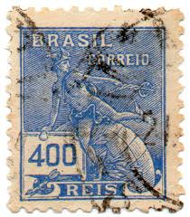 |
| www.mysticstamp.com | 537 - 1919 3c Victory & Flags of Allies, Violet - Mystic ... | 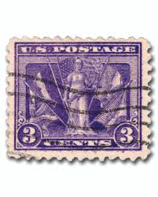 |
| stampforgeries.com | Stamp forgeries of Diego Suarez | Stampforgeries of the World | 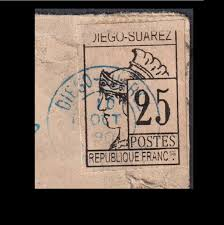 |
| commons.wikimedia.org | File:Selo Brasil 400 anos 1500 1900 500 reis.jpg - Wikimedia ... | 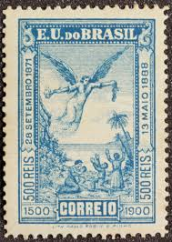 |
| www.facebook.com | Collecting 1956 postage stamps from Malta | 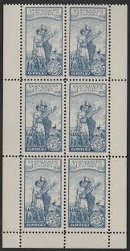 |
| digital.sciencehistory.org | Postage stamp from East Germany commemorating Marie Curie ... | 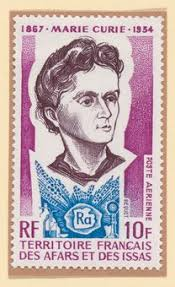 |
| www.gettyimages.com | 595 Italian Postage Stamps Stock Photos, High-Res Pictures ... | 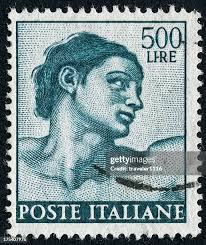 |
| www.linns.com | Three failures lead to the long-lived Sower design | 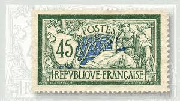 |
| www.arpinphilately.com | Buy Brazil #440 - Mercury (1936) | Arpin Philately | 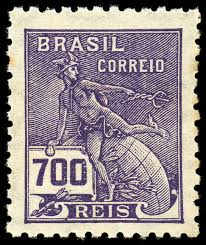 |
| stamps.org | Article of Distinction: The Dumas Family on Stamps of Haiti | 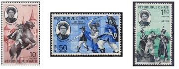 |
| www.youtube.com | Vatican City Stamps Ep1 (A Plethora Of Popes) Postage Due ... | 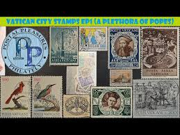 |
| worldstampsproject.org | Austria, National Costumes: 1.50 S. – Wien 1853 – World ... | 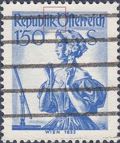 |
| www.flickr.com | beautiful old french France 5 f stamp France Marianne post ... |  |
| www.instagram.com | 1840 Twopence Blue, St. Helena, 1990, 13p, SC#SH528. Part of ... | 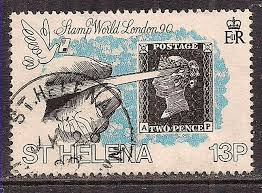 |
| www.burda-auction.com | Diego-Suarez / North and East Africa / Africa / Philately ... | 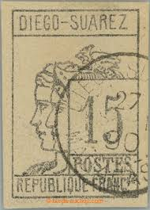 |
| colnect.com | Stamp: "Commerce" (Brazil(Definitives, Milreis) Mi:BR 566xI ... | 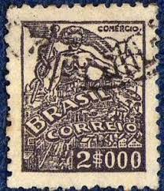 |
| www.virtualstampclub.com | Virtual Stamp Club - Evita On Stamps | 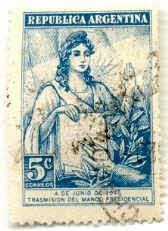 |
| www.arpinphilately.com | Buy France #B6 - Woman Plowing (1917) 25¢ + 15¢ | Arpin ... | 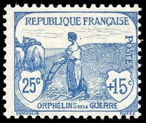 |
| en.wikipedia.org | Cancelled-to-order - Wikipedia | 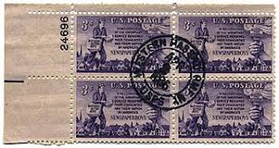 |
| www.shutterstock.com | Brazil Circa 1956 Stamp Printed Brazil Stock Photo ... | 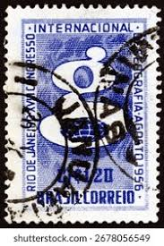 |
| www.manresa-sj.org | José de Anchieta, SJ | |
| www.facebook.com | 10 Cent Ceylon Stamp Commemorating Queen Elizabeth II's ... | |
| www.stampcollectingblog.com | Which stamps are worth money? | |
| www.hipstamp.com | Brazil 1039 - Used - Anita Garibaldi (3) | Central & South ... | |
| thatsmaths.com | The Brief and Tragic Life of Évariste Galois – ThatsMaths | |
| www.ebay.com | SWITZERLAND Scott 100 Used Stamp Progress T259 | eBay | |
| www.linns.com | Spink Dec. 10 London auction features parts 7 and 8 of ... | |
| stampforgeries.com | Stamp forgeries of Liberia | Stampforgeries of the World |
{kind=link}
{kind=link}